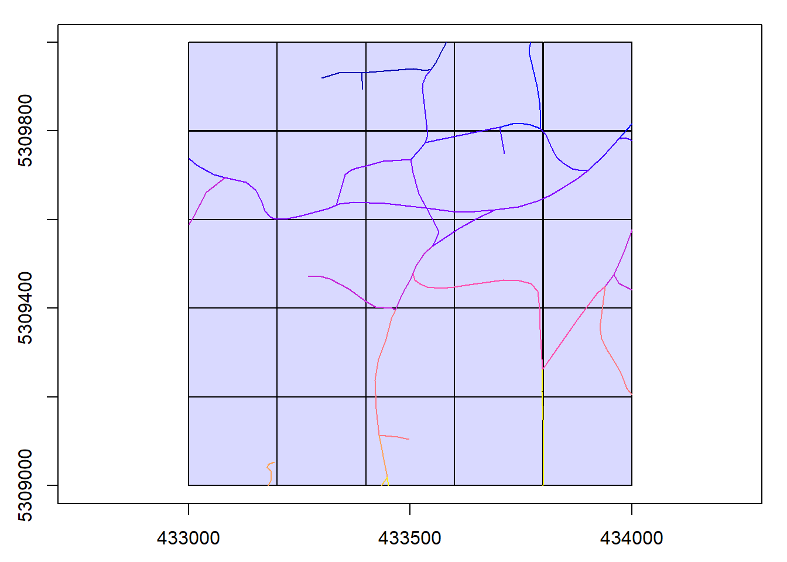

Chapter 1 DEmonstration
library(lidR)## Loading required package: raster## Loading required package: splibrary(sf)## Linking to GEOS 3.9.0, GDAL 3.2.1, PROJ 7.2.1library(MFFProads)
library(dplyr)##
## Attaching package: 'dplyr'## The following objects are masked from 'package:raster':
##
## intersect, select, union## The following objects are masked from 'package:stats':
##
## filter, lag## The following objects are masked from 'package:base':
##
## intersect, setdiff, setequal, union#--- read in laz and road shapefile ---#
ctg <- readLAScatalog("F:/_2021_MFPProads/RMF/RMF_roads_SPL/1kmZ174330530902018L/split")
shp <- st_read("F:/_2021_MFPProads/RMF/RMF_roads_SPL/1kmZ174330530902018L/roads_1kmZ174330530902018L.shp")## Reading layer `roads_1kmZ174330530902018L' from data source
## `F:\_2021_MFPProads\RMF\RMF_roads_SPL\1kmZ174330530902018L\roads_1kmZ174330530902018L.shp'
## using driver `ESRI Shapefile'
## Simple feature collection with 40 features and 38 fields
## Geometry type: LINESTRING
## Dimension: XY
## Bounding box: xmin: 433000 ymin: 5309000 xmax: 434000 ymax: 5310000
## Projected CRS: NAD83(CSRS) / UTM zone 17Nplot(ctg)
plot(shp,add=TRUE)## Warning in plot.sf(shp, add = TRUE): ignoring all but the first attribute
#--- test on single road ---#
# road <- shp %>%
# dplyr::filter(OBJECTID == 29976)
# res <- measure_road(road, ctg, mffproads_default_parameters, relocate = TRUE)
# img <- rast("F:/_2021_MFPProads/RMF/RMF_roads_SPL/1kmZ174330530902018L/RGBN_tile_1kmZ174330530902018L.tif")
#
# RGB(img) <- c(2,3,4)
#
# plot(img)
# plot(road,add=TRUE,col = "red")
# plot(res,add=TRUE,col = "blue")
# mapview::mapview(list(road, res),
# layer.name = c("Inaccurate", "Corrected"),
# color = c("red", "blue"), map.type = "Esri.WorldImagery")
#
#
# options(MFFProads.debug.finding = TRUE)
# options(MFFProads.debug.measuring = FALSE)
# options(MFFProads.debug.metrics = FALSE)
# res1 <- measure_road(road, ctg, mffproads_default_parameters, relocate = TRUE)
#
# options(MFFProads.debug.finding = FALSE)
# options(MFFProads.debug.measuring = TRUE)
# options(MFFProads.debug.metrics = FALSE)
# res2 <- measure_road(road, ctg, mffproads_default_parameters, relocate = TRUE)
#
# options(MFFProads.debug.finding = FALSE)
# options(MFFProads.debug.measuring = FALSE)
# options(MFFProads.debug.metrics = TRUE)
# res3 <- measure_road(road, ctg, mffproads_default_parameters, relocate = TRUE)